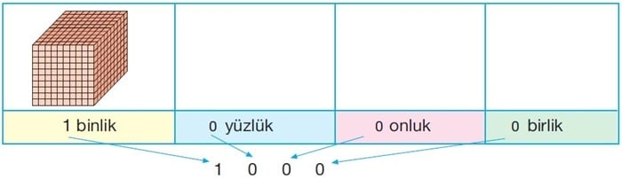
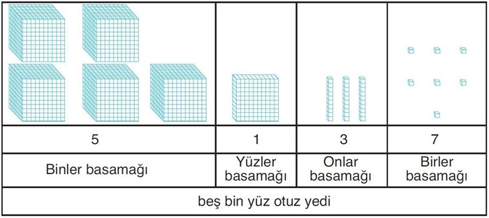
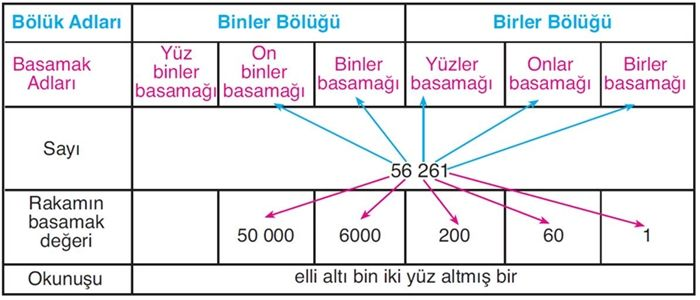
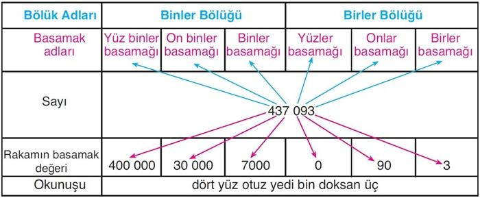
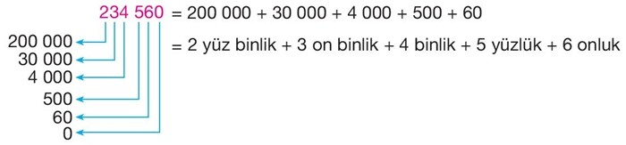
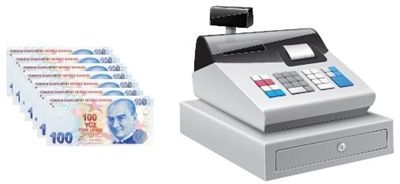
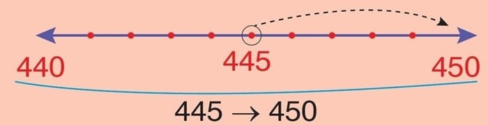
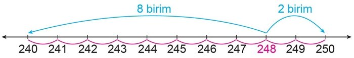
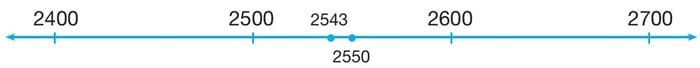

Dört Basamaklı Sayılar
3. sınıfta üç basamaklı doğal sayıları öğrenmiştik. En büyük üç basamaklı doğal sayının 999 olduğunu biliyoruz.
1000 sayısı dört basamaklı bir sayıdır.

Tabloda 0 (sıfır) birlik, 0 (sıfır) onluk, 0 (sıfır) yüzlük ve 1 binlik vardır. Bu sayının okunuşu “bin”, yazılışı ise “1000” şeklindedir. 1000 en küçük dört basamaklı sayıdır. 9999 sayısı da dört basamaklı en büyük doğal sayıdır.
Örnek:
Ağrı Dağı’nın yüksekliğini gösteren “beş bin yüz otuz yedi” doğal sayısını modelleyelim.

5137 sayısı dört rakamdan oluşmaktadır. Bu sayı, dört basamaklı doğal sayıdır.
Beş Basamaklı Sayılar
“Elli altı bin iki yüz altmış bir” doğal sayısını basamak tablosunda gösterelim.

56 261 sayısı beş rakamdan oluşmaktadır. Bu sayı, beş basamaklı doğal sayıdır.
Altı Basamaklı Sayılar
“Dört yüz otuz yedi bin doksan üç” doğal sayısını basamak tablosunda gösterelim.

Sayıları okurken önce bölük içindeki sayı okunur. Sonuna bölük ismi eklenir. Ama birler bölüğü okunurken sonuna bölük ismi eklenmez. Dört yüz otuz yedi bin doksan üç.
437 093 sayısı altı rakamdan oluşmaktadır. Bu sayı, altı basamaklı doğal sayıdır.
Doğal Sayıları Çözümleme
Bir doğal sayıyı rakamlarının basamak değerlerinin toplamı şeklinde yazmaya, bu doğal sayıyı çözümleme denir.
Örnek: 234 560 sayısını, sayıdaki rakamların basamak değerlerini yazarak çözümleyelim.

Ritmik Saymalar
Geçen sene altışar, yedişer, sekizer, dokuzar ve onar ritmik saymaları öğrenmiştik.
Altışar ritmik sayalım: 6 - 12 - 18 - 24 - 30 - 36 - 42 - 48 - 54 - 60
Yedişer ritmik sayalım: 7 - 14 - 21 - 28 - 35 - 42 - 49 - 56 - 63 - 70
Sekizer ritmik sayalım: 8 - 16 - 24 - 32 - 40 - 48 - 56 - 64 - 72 - 80
Dokuzar ritmik sayalım: 9 - 18 - 27 - 36 - 45 - 54 - 63 - 72 - 81 - 90
Onar ritmik sayalım: 10 - 20 - 30 - 40 - 50 - 60 - 70 - 80 - 90 - 100
Yüzer Ritmik Sayma
100’den başlayarak 1000’e kadar yüzer ileriye doğru sayarken aşağıdaki sayılar söylenir:
100 → 200 → 300 → 400 → 500 → 600 → 700 → 800 → 900 → 1000
İleriye doğru yüzer ritmik sayarken yüzler basamağındaki rakam artar. Yüzlük sayısı 9 olduğunda bir sonraki binliğe geçilir.
Kasada 8200 TL vardı. Kasaya sekiz adet daha 100 TL konuldu. Son durumda kasada bulunan parayı yüzer ritmik sayma yaparak bulalım.

8300 → 8400 → 8500 → 8600 → 8700 → 8800 → 8900 → 9000
Son durumda kasada 8900 TL olur.
Biner Ritmik Sayma
1000’den başlayarak 10 000’e kadar biner ileriye doğru sayarken aşağıdaki sayılar söylenir:
1000 → 2000 → 3000 → 4000 → 5000 → 6000 → 7000 → 8000 → 9000 → 10 000
İleriye doğru biner ritmik sayarken binler basamağındaki rakamlar artar. Diğer basamaklardaki rakamlar değişmez.
Bakkal Hasan Amca, rafta 3000 g‘lık küp şeker kaldığını fark etti. Gidip depodan 6 adet 1000 g‘lık küp şeker daha getirdi. Son durumda raftaki küp şeker miktarını biner ritmik sayma yaparak bulalım.
4000 → 5000 → 6000 → 7000 → 8000 → 9000
Son durumda rafta 9000 g şeker olmuş oldu
Sayıları Onluğa ve Yüzlüğe Yuvarlama
Sayıları En yakın Onluğa Yuvarlama
Geçen sene üç basamaklı doğal sayıları en yakın onluğa ve yüzlüğe yuvarlama konusunu öğrenmiştik.
Sayıları en yakın onluğa yuvarlarken birler basamağına bakılır. Sayının birler basamağındaki rakam 5’ten küçükseonlar
basamağındaki rakam aynen yazılır. Birler basamağına sıfır yazılır. Sayının birler basamağındaki rakam 5 ya da 5’ten büyükse onlar basamağındaki rakam 1 artırılır. Birler basamağına sıfır yazılır.
Örnek:

445 doğal sayısı 440 ile 450 sayıları arasındadır. 445 sayısının birler basamağında 5 rakamı vardır. O halde 445 sayısını 450‘ye yuvarlarız.
Örnek:
248 sayısını en yakın onluğa yuvarlayalım.

248 doğal sayısı 240 ile 250 sayıları arasındadır. 248 sayısı 250 sayısına 2 birim, 240 sayısına 8 birim uzaklıktadır. 248 sayısı, 250 sayısına daha yakındır. O halde 248 sayısını 250‘ye yuvarlarız.
Sayıları En yakın Yüzlüğe Yuvarlama
Sayıları en yakın yüzlüğe yuvarlarken onlar basamağına bakılır. Sayının onlar basamağındaki rakam 5’ten küçükse, yüzler basamağındaki rakam aynen yazılır. Onlar ve birler basamağına sıfır yazılır. Sayının onlar basamağındaki
rakam 5 ya da 5’ten büyükse yüzler basamağındaki rakam 1 artırılır. Onlar ve birler basamağına sıfır yazılır.
Örnek:
Bursa’da bulunan Uludağ’ın yüksekliği 2543 metredir. 2543 sayısını en yakın yüzlüğe yuvarlayalım.

2543 doğal sayısı 2500 ile 2600 sayıları arasındadır. 2543 sayısının, onlar basamağında 4 rakamı oluğu için sayı 2500 sayısına daha yakındır. O halde 2543 sayısını 2500‘e yuvarlarız.
Bu ünitemizde doğal sayılar konusunu detaylı bir şekilde öğrendik artık 2.Üniteye geçebiliriz.